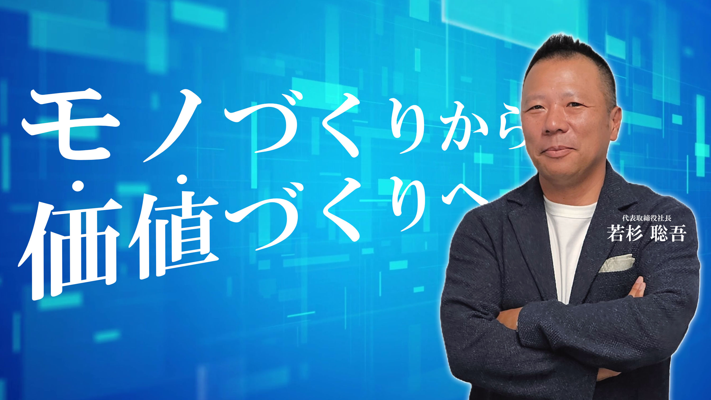

『ものづくり』から『価値創り』へ
未来を支える技術で、お客様の"期待を超える"
経営理念
“未来を支える技術”で、お客様の“期待を超える”ことが私たちの使命です。私たち社員一人ひとりは“創造力”と“人間力”で“日々の成長を積み重ね”
常に“夢”を追い続ける“モチベーションカンパニー”を目指します。

当社は１９７７年の創業以来、コンピュータ関連技術を駆使して、
多種多様な開発実績を積み上げ、お客様との信頼関係を築いて参りました。
これまでに培った経験や技術にとらわれず、近年のICT分野の
急速な発展と共に時代をリードできるよう挑戦し続けます。
これからも日本人の気質である繊細さと真心を大切に社員一丸となって、
より豊かな未来の価値創りに貢献して参ります。
＜代表取締役社長 若杉 聡吾＞
Company History
会社沿革
1977年創業〜現在
2020s — 現代
-
2024年
4月当社自社開発商品「スタンポン」一次開発完了
ウェブページ制作、Youtube、Instagram及びXなどのデジタル広報サービス事業を開始
-
2024年
3月商標登録第9類「スタンポン」商標権取得
株式会社ネクスティエレクトロニクスと車載ソフトウェア開発業務に関して業務提携を締結
-
2022年
4月全省庁統一資格(入札:物品の製造、物品の販売、役務の提供)更新
-
2021年
12月「DXケッサイプラスワン」がITツールに採択
-
2021年
7月IT導入支援事業者に採択
-
2020年
8月新サービス「S.R.S.」(システムリノベーションサービス)の営業開始
2010s
-
2017年
4月株式会社ネクスティエレクトロニクスと車載ソフト開発で業務提携
-
2017年
4月株式会社ネクスティエレクトロニクスと車載ソフト開発で業務提携
-
2014年
11月SCSK株式会社、株式会社豆蔵、イーソル株式会社、ビジネスキューブ・アンド・パートナーズ株式会社、キャッツ株式会社と車載システム事業を共同で推進する目的で戦略的な業務提携で合意する(2014年11月28日プレスリリース)
-
2013年
6月愛知県地域事務局より「平成24年度ものづくり中小企業・小規模事業者試作開発用等支援補助金」の交付決定を受ける(補助金の額:1千万円)
-
2013年
6月代表取締役社長に若杉聡吾が就任、若杉直樹は代表取締役会長へ
-
2012年
10月東京支店を品川区西五反田1-29-1 コイズミビル5階へ移転、増床(旧147.86㎡ → 新297.04㎡)
-
2012年
7月当社オリジナル開発商品「RFLinkFamily」を当社ホームページ上にて販売開始
-
2012年
2月エコネットコンソーシアムに加盟
-
2011年
3月FTL軽井沢(所在地:北佐久郡軽井沢町大字長倉字小谷ヶ沢2139番2966)を売却
-
2010年
4月World Wide Web Consortium(W3C)に加盟
2000s
-
2009年
3月愛知県から「FNCS(ソフトウェア開発の効率化と作業平準化によるコストダウン)」で経営革新計画の承認を受ける
-
2008年
11月資本金を6700万円に増額(40,000株 増資)
-
2008年
6月新栄ビル(所在地:名古屋市中区新栄2丁目8番23号)を売却
-
2007年
5月関係会社の株式会社ファインテック及び株式会社システムコーディネイトを吸収合併し資本金が4700万円となる
-
2007年
3月有限責任法人JASPARへ正会員にて加盟
-
2005年
12月FTL軽井沢(開発センター)を長野県北佐久郡軽井沢町大字長倉字小谷ヶ沢2139番2966に「FTL軽井沢」をオープン(土地5740坪、建物521.6坪)
-
2005年
5月入札の為の「全省庁統一資格」取得
-
2004年
7月長野県北佐久郡軽井沢町大字長倉字小谷ヶ沢2139番2966に「FTL軽井沢」建設用地及び建物を取得(土地5740坪、建物521.6坪)
-
2004年
5月無担保社債3億円発行<当時:UFJ銀行(現:三菱UFJ銀行)100%保証>
-
2004年
3月ジンバブエの政情不安により「FTL・AFRICA」を閉鎖
組織変更によりマーケティングDiv.を新設し営業部門の一本化をする
-
2002年
6月創立25周年記念社員旅行(台北3日)
-
2001年
4月株式会社ファインテック及び株式会社システムコーディネイトの全株式を株式会社エフティエルインターナショナルへ譲渡
-
2000年
4月携帯電話配信システム「夢プラン2000」開発
1990s
-
1999年
9月名古屋市中区新栄三丁目3番2号に「FTL本社ビル」を竣工して本社を千種区から中区(本社ビル)に移転(鉄骨造5階建、延べ床面積260.1坪)
-
1999年
2月アフリカのジンバブエに関連会社「FTL・AFRICA」を設立
-
1998年
11月名古屋市中区新栄二丁目8番23号に「FTL新栄ビル」を竣工(鉄骨造5階建、延べ床面積156.4坪)
-
1998年
6月社員旅行(香港3日)
-
1998年
3月株式会社エフティエルインターナショナルを設立
-
1997年
4月商標登録第42類「FTL」商標権取得
-
1997年
1月創立20周年記念社員旅行(ハワイ5日)
-
1994年
10月東京支店を東京都品川区西五反田一丁目17番6号トミエビル7階に移転(30坪)
-
1992年
1月創立15周年記念社員旅行(シンガポール5日)
-
1990年
12月"OEM EUROPE90"(於:フランス・パリ)に「アルミ蒸着カードターミナル」出展
-
1990年
6月ソニーコンピュータフェアに「AI=MASK」と「きづくり名人ジンゴローⅠ世」出展
1980s
-
1989年
10月あいち21産業情報フェア(於:名古屋吹上ホール)に「AI=MASK」と「アルミ蒸着カードターミナル」を出展
アルミ蒸着カードターミナル開発(日経産業新聞1面に掲載)
-
1988年
11月1988年第1回国際コンピュータ囲碁世界大会(於:台湾)に於いて日本代表の当社取締役林和芳が優勝
-
1988年
8月名古屋市中区新栄二丁目8番23号に不動産取得(土地126.27㎡)
-
1988年
7月1988年国際コンピュータ囲碁大会(日本代表選抜大会)に於いて当社取締役林和芳が優勝し日本代表となる
-
1988年
4月東京都大田区蒲田一丁目の東京宿舎設置
-
1987年
10月東京オフィスを東京営業所に格上げし港区芝一丁目に移転、開設
-
1986年
12月株式会社システムコーディネイトを資本金1000万円に増資、株式会社ファインテックを資本金1000万円に増資
株式会社システムコーディネイトに出資、全株式取得(資本金500万円)、株式会社ファインテックの全株式取得(資本金500万円)
-
1986年
7月資本金を2700万円に増資
-
1985年
9月(財)新世代コンピュータ技術開発機構(ICOT)の中期計画に参画
東京オフィス開設(東京都港区三田四丁目)
-
1984年
12月動画像編集装置開発(日経産業新聞1面に掲載)
-
1983年
10月オンライン集配信装置開発(日経産業新聞1面に掲載)
-
1983年
3月資本金を1500万円に増資
-
1982年
8月資本金500万円でハード開発の株式会社ファインテックを設立
-
1982年
8月資本金500万円でハード開発の株式会社ファインテックを設立
名古屋市千種区内山三丁目18番12号に開発部門を移転
-
1982年
7月名古屋市千種区内山三丁目28番2号に本社を移転
Founding — 創業
-
1980年
4月資本金を700万円に増資
-
1979年
7月名古屋市千種区(大福興行ビル)にてマイコン・ソフト開発の事業開始
-
1977年
6月名古屋市守山区で資本金300万円で会社設立 代表取締役に若杉直樹、取締役に林和芳就任
- どんな人と一緒に仕事ができるの？
-
先端技術で、お客様と対等に議論できる本物のエンジニアと一緒に仕事ができます。
すごい人が隣にいるのが当たり前でとても励みになります。 - 私は将来どんな人になれますか？
-
社内外の専門家との仕事を通じて高い目標意識を持てます。
その道のプロフェッショナルになるのも夢じゃない！ - 企画とか提案はできますか？
-
自分の興味があることや、流行りのことなど、社内プロジェクトを立ち上げたり、
お客様へプレゼンして一緒に作り上げていくことができます。
FTLではやりたいことが仕事になる！ - ライフワークバランスはどうなんだろう？
-
自分のライフスタイル、ライフステージに合わせて在宅ワークや半休制度、
育児・介護休暇などが利用できます。
成果に繋がれば、場所や時間にこだわらず、フレキシブルに働くこともできます。 - 名古屋本社ってどんなところ？
-
名古屋本社の1階はちょっぴりレトロで重厚なホテルのよう。
まるで美術館のように各階には絵画が飾られ、大きなステンドグラスも自慢です。
さらには名駅、栄にも近く終業後はどこへでも行けます。 - 東京支店はどんなところ？
-
東京支店は五反田駅のエキチカで、新幹線や羽田空港も近く移動に便利。
五反田は日本のシリコンバレーと呼ばれていて、とても活気づいています。
また、お昼や夜の食事処もたくさんあります。
| 名称 | 株式会社未来技術研究所 (Future technology laboratories INC.)=略してFTL！ |
|---|---|
| 設立 | 1977年6月15日 |
| 資本金 | 6,700万円 |
| 年商 | 4.03 億円(2025年4月) |
| 従業員数 | 60 名(グループ) |
| 平均年齢 | 39 歳 |
| 事業内容 | システムコンサルティング、ソフトウェア/ハードウェア開発、システムリノベーションサービス、研究支援、新商品開発支援 |
| 役員 | 代表取締役 社長 若杉 聡吾 取締役 土方 文夫 取締役 小関 勝 監査役 阪井 義孝(公認会計士) |
| 顧問 | 一色 正男(神奈川工科大学教授) |
| 決算期 | 4 月 |
| 取引銀行 | 三菱UFJ銀行、名古屋銀行他 |
| 関連会社 | 株式会社エフティエルインターナショナル |
| 所属団体 | 社団法人愛知県情報サービス産業健康保険組合、W3C |
名古屋本社
JR中央本線・名古屋市営地下鉄東山線 千種駅 / 徒歩5分
- 〒460-0007
- 名古屋市中区新栄三丁目3番2号
- TEL:(052)238-7511(代)
東京支店
JR山手線・東急池上線・都営浅草線 五反田駅 / 徒歩3分
- 〒141-0031
- 東京都品川区西五反田一丁目29番1号 コイズミビル5F
- TEL:(03)3491-0871(代)
主要取引先
| 公的機関 | 幾徳学園神奈川工科大学 株式会社国際電気通信基礎技術研究所 国立研究開発法人宇宙航空研究開発機構 国立研究開発法人産業技術総合研究所 国立研究開発法人情報通信研究機構 国立研究開発法人日本原子力研究開発機構 国立研究開発法人理化学研究所 大学共同利用機関法人高エネルギー加速器研究機構 東京都水道局 名古屋大学核融合科学研究所（旧プラズマ研） 日本放送協会放送技術研究所 |
|---|---|
| メーカー | 株式会社アイシン /
株式会社アスカ商会 株式会社ウーブン・アルファ / ＮＴＴデータグループ 川崎重工業株式会社 / キヤノン株式会社 KDDI 株式会社 / 社会福祉法人サン・ビジョン 株式会社シンテックホズミ / 住友林業株式会社 セイコーエプソン株式会社 / ソニー株式会社 中部電力株式会社 / 株式会社デンソー 株式会社東海理化 / 東芝グループ 東京吉岡株式会社 / 東邦ガス株式会社 トヨタ自動車株式会社 / 豊田通商株式会社 中埜総合印刷株式会社 / 名古屋電機工業株式会社 日本ガイシ株式会社 / 株式会社日本・精神技術研究所 日本IBM株式会社 / 株式会社ネクスティエレクトロニクス パイオニア株式会社 / パナソニックITS株式会社 日立グループ / 株式会社福田屋百貨店 富士通テン株式会社 / ブラザー工業株式会社 株式会社本田技術研究所 / 株式会社松坂屋 三菱重工業株式会社 / 三菱電機株式会社 ヤマハ株式会社 / ヤマハ発動機株式会社…他 |